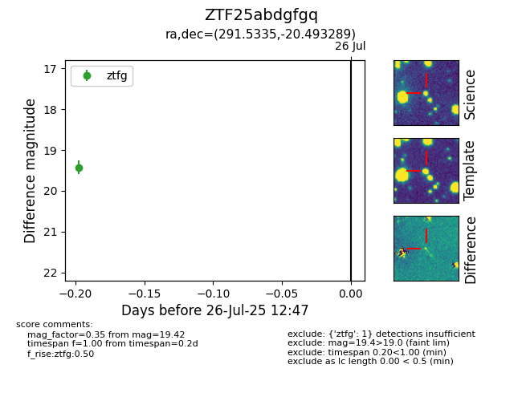

Target ZTF25abdgfgq at 2025-07-26 12:47, see:
FINK: fink-portal.org/ZTF25abdgfgq
Lasair: lasair-ztf.lsst.ac.uk/objects/ZTF25abdgfgq
ALeRCE: alerce.online/object/ZTF25abdgfgq
alt names
ZTF25abdgfgq (ztf,fink)
coordinates:
equatorial (ra, dec) = (291.5335,-20.49329)
galactic (l, b) = (17.9870,-16.58074)
photometry
last ztfg=19.42
1 ztfg detections
